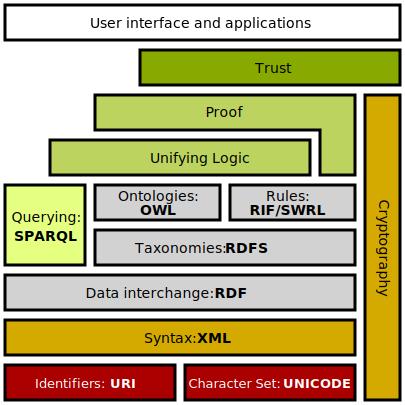
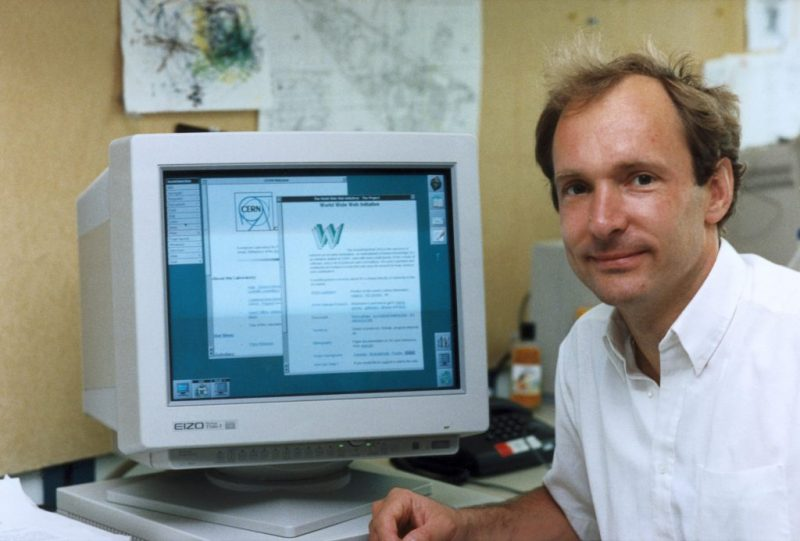
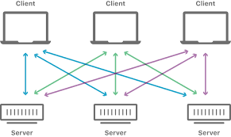
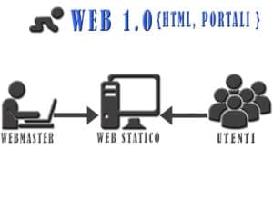
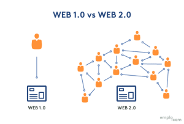
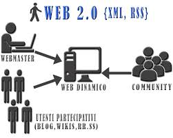
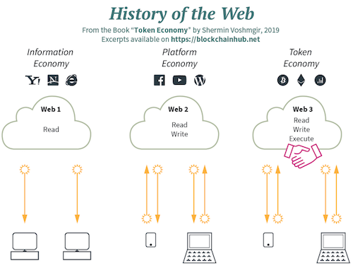

The Semantic Web
The entertainment system was belting out the Beatles' "We Can Work It Out" when the phone rang.Berners-Lee, Tim, James Hendler, and Ora Lassila.
The Semantic Web. Scientific American, May 2001
The Semantic Web
La prima proposta dell'architettura del Web nel 1989

6 agosto 1991
Tim Berners-Lee pubblica la prima pagina Web, tramite il protocollo HTTP e in HTML.
HTTP - Hypertext Transfer Protocol: un protocollo applicativo di trasporto dati di tipo client-server, privo di memoria, generico e indipendente dal tipo dei dati trasportati.
HTML - Hypertext Markup Language: un linguaggio ddi presentazione e formattazione di testo con capacità di descrizione di collegamenti ipertestuali, in grado di mantenere il testo leggibile da utenti umani, ma interpretabile da specifici programmi client, i Web browser.
URL - Uniform Resource Locator: uno schema univoco e globale di individuazione e indirizzamento di documenti o, in termini più generali, di "risorse", mediante l'utilizzo di una stringa di caratteri.
Altri elementi essenziali
User-Agent
un user agent è un'applicazione installata sul computer dell'utente che si connette ad un processo server. Esempi di user agent sono i browser web, i lettori multimediali e i programmi client (Mail User Agent). (Wikipedia)
Altri elementi essenziali
Browser è un software che consente di recuperare, presentare e navigare determinate risorse sul Web, tipo pagine, immagini, video, canzoni o altri tipi di contenuti, identificandole attraverso un appropriato URL. Per consentire agli utenti fruitori del browser di navigare più facilmente verso altre risorse correlate, ogni risorsa esistente nel Web presenta, di solito, uno o più opportuni link.
Altri elementi essenziali
Server e Client
il server indica una componente hardware o software che fornisce i dati richiesti da una o più altre componenti, dette client. In altre parole, un server non è altro che un computer e/o un programma in grado di rispondere alle richieste fatte da altri computer e/o da altri programmi.
Altri elementi essenziali
Server e Client
il client indica una determinata componente hardware o software che accede alle risorse o ai servizi erogati da un’altra componente, detta server.
Altri elementi essenziali
Unicode è un sistema di codifica di livello ch epossiamo definire di livello 0. Un sistema di codifica che assegna un numero univoco ad ogni carattere usato per la scrittura di testi, in maniera indipendente dalla lingua, dalla piattaforma informatica e dal programma utilizzato.
Creato nel 1987-89, Unicode vede la prima pubblicazione in volume nel 1991, in cui troviamo le tabelle di caratteri per la mappatura dei simboli delle principali lingue del mondo; oggi Unicode è costantemente aggiornato online e comprende circa 140.000 caratteri per la rappresentazione di 150 sistemi di scrittura, antichi e moderni
Dal Web 1.0 al 2.0
Web 1.0
 Un Web di documenti/pagine collegate ipertestualmente. Formato dai tre elementi citati sopra.Dal Web 1.0 al 2.0
Si passa da un Web di documenti collegati fra loro a uno si dati interconnessi.
Il Web 2.0: interagire e modificare i contenuti delle pagine Web. Termine coniato da Tim O'Reilly nel 2004.
Dal Web 2.0 ai giorni nostri
Il Web si fa sempre più complesso e le scienze umanistiche si devono confrontare con tale complessità: gli applicativi, i sistemi di annotazione, l'evoluzione dell'HTML, nascita dell'HTML5 con audio, video, etc.
Un Web di dati interconnessi
La storia del Web
Gli standard e le raccomandazioni
Da Tim Berners-Lee alla W3C
W3C e le critiche sull'HTML
Nascita di WHATWG (2004) e il ruolo dei browser
Fine della prima parte. Inizio della seconda